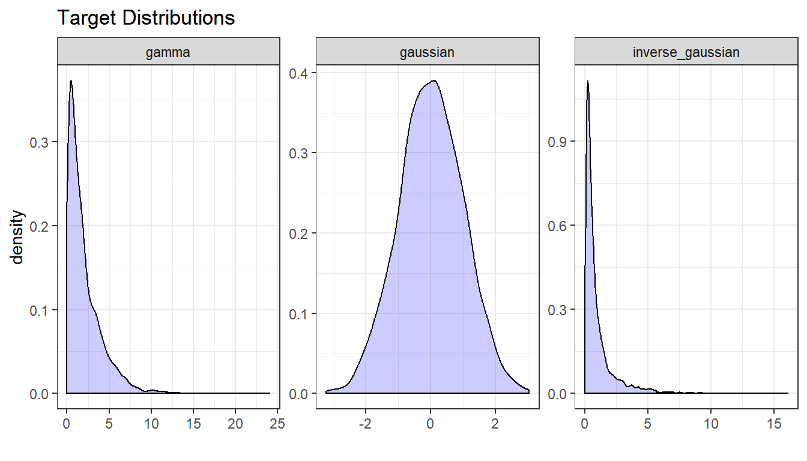
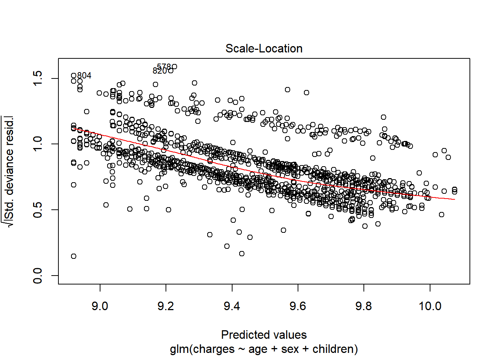
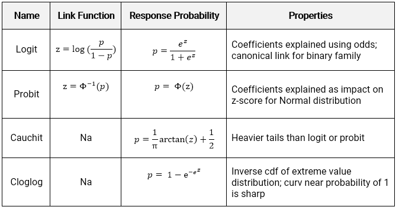

11 GLMs for regression
For regression problems, we try to match the actual distribution to the model’s distribution being used in the GLM. These are the most likely distributions.

The choice of target distribution should be similar to the actual distribution of \(Y\). For instance, if \(Y\) is never less than zero, then using the Gaussian distribution is not ideal because this can allow for negative values. If the distribution is right-skewed, then the Gamma or Inverse Gaussian may be appropriate because they are also right-skewd.

There are five link functions for a continuous \(Y\), although the choice of distribution family will typically rule-out several of these immediately. The linear predictor (a.k.a., the systemic component) is \(z\) and the link function is how this connects to the expected value of the resonse.
\[z = X\beta = g(\mu)\] 
If the target distribution must have a positive mean, such as in the case of the Inverse Gaussian or Gamma, then the Identity or Inverse links are poor choices because they allow for negative values; the range of the mean is \((-\infty, \infty)\). The other link functions force the mean to be positive.